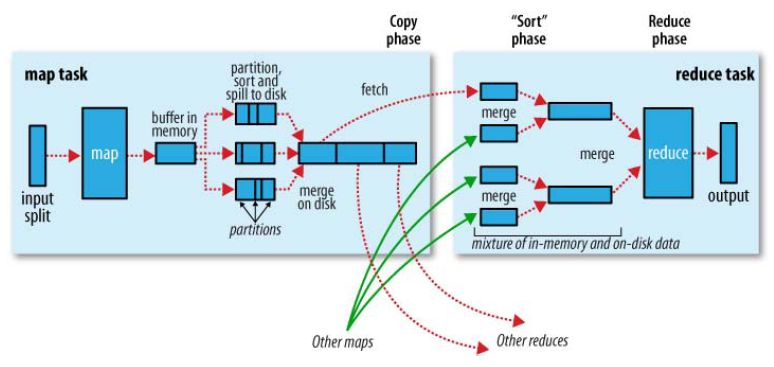
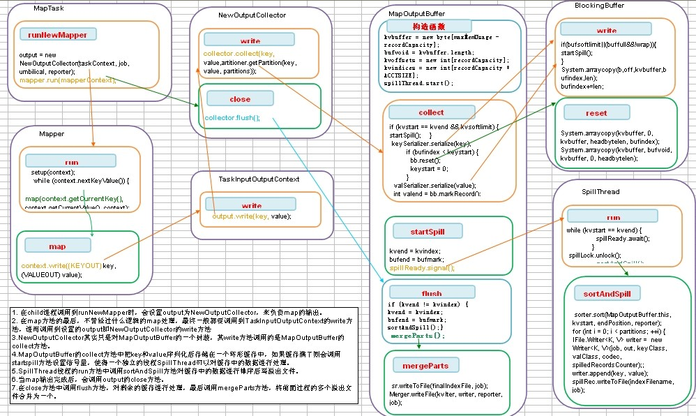
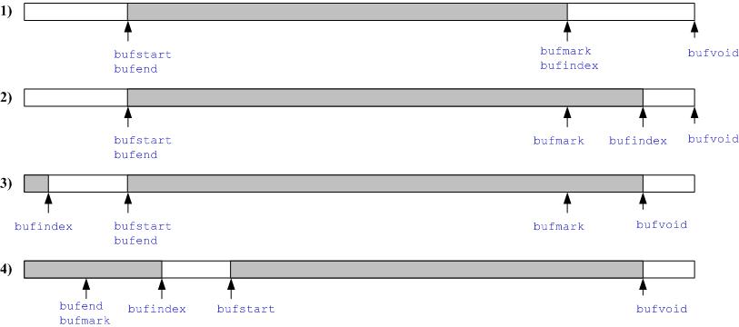
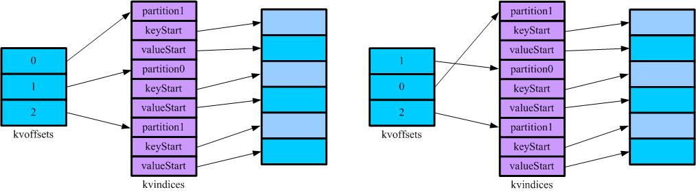
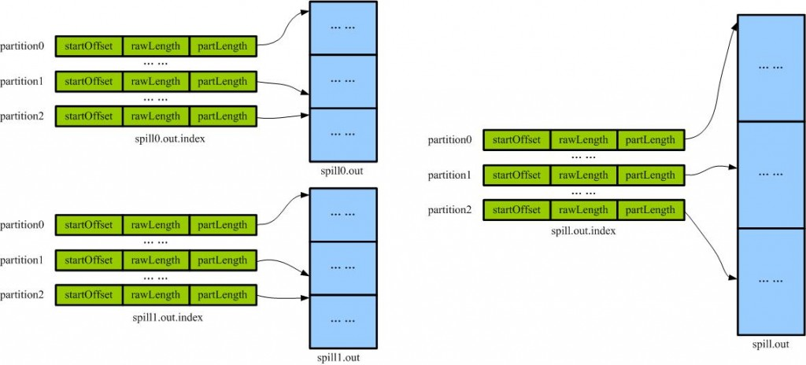

【hadoop代码笔记】Mapreduce shuffle过程之Map输出过程
一、概要描述
shuffle是MapReduce的一个核心过程，因此没有在前面的MapReduce作业提交的过程中描述，而是单独拿出来比较详细的描述。 根据官方的流程图示如下：

本篇文章中只是想尝试从代码分析来说明在map端是如何将map的输出保存下来等待reduce来取。 在执行每个map task时，无论map方法中执行什么逻辑，最终都是要把输出写到磁盘上。如果没有reduce阶段，则直接输出到hdfs上，如果有有reduce作业，则每个map方法的输出在写磁盘前线在内存中缓存。每个map task都有一个环状的内存缓冲区，存储着map的输出结果，默认100m，在每次当缓冲区快满的时候由一个独立的线程将缓冲区的数据以一个溢出文件的方式存放到磁盘，当整个map task结束后再对磁盘中这个map task产生的所有溢出文件做合并，被合并成已分区且已排序的输出文件。然后等待reduce task来拉数据。
二、 流程描述
- 在child进程调用到runNewMapper时，会设置output为NewOutputCollector，来负责map的输出。
- 在map方法的最后，不管经过什么逻辑的map处理，最终一般都要调用到TaskInputOutputContext的write方法，进而调用到设置的output即NewOutputCollector的write方法
- NewOutputCollector其实只是对MapOutputBuffer的一个封装，其write方法调用的是MapOutputBuffer的collect方法。
- MapOutputBuffer的collect方法中把key和value序列化后存储在一个环形缓存中，如果缓存满了则会调用startspill方法设置信号量，使得一个独立的线程SpillThread可以对缓存中的数据进行处理。
- SpillThread线程的run方法中调用sortAndSpill方法对缓存中的数据进行排序后写溢出文件。
- 当map输出完成后，会调用output的close方法。
- 在close方法中调用flush方法，对剩余的缓存进行处理，最后调用mergeParts方法，将前面过程的多个溢出文件合并为一个。

Mapreduce shuffle过程之Map输出过程代码流程
三、代码详细
1. MapTask的runNewMapper方法
注意到有这样一段代码。即当job中只有map没有reduce的时候，这个rg.apache.hadoop.mapreduce.RecordWriter类型的对象 output是一Outputformat中定义的writer，即直接写到输出中。如果是有Reduce，则output是一个NewOutputCollector类型输出。
if (job.getNumReduceTasks() == 0) {
output = outputFormat.getRecordWriter(taskContext);
} else {
output = new NewOutputCollector(taskContext, job, umbilical, reporter);
}
mapperContext = contextConstructor.newInstance(mapper, job, getTaskID(),input, output, committer, reporter, split);
input.initialize(split, mapperContext);
mapper.run(mapperContext);
和其他的RecordWriter一样，NewOutputCollector也继承自RecordWriter抽象类。除了一个close方法释放资源外，该抽象类定义的最主要的方法就一个void write(K key, V )。即写入key，value。
2. Mapper的run方法，对每个输出执行map方法。
public void run(Context context) throws IOException, InterruptedException {
setup(context);
while (context.nextKeyValue()) {
map(context.getCurrentKey(), context.getCurrentValue(), context);
}
cleanup(context);
3. Mapper的map方法，默认是直接把key和value写入
protected void map(KEYIN key, VALUEIN value,
Context context) throws IOException, InterruptedException {
context.write((KEYOUT) key, (VALUEOUT) value);
}
一般使用中会做很多我们需要的操作，如著名的wordcount中，把一行单词切分后，数一（value都设为_one_ = **new** IntWritable(1)），但最终都是要把结果写入。即调用context.write(key,value)
public void map(Object key, Text value, Context context
) throws IOException, InterruptedException {
StringTokenizer itr = new StringTokenizer(value.toString());
while (itr.hasMoreTokens()) {
word.set(itr.nextToken());
context.write(word, one);
}
}
4. TaskInputOutputContext的write方法。
调用的是contex中的RecordWriter的write方法。即调用的是NewOutputCollector的write方法。
public void write(KEYOUT key, VALUEOUT value
) throws IOException, InterruptedException {
output.write(key, value);
}
5. NewOutputCollector的write方法
public void write(K key, V value) throws IOException, InterruptedException {
collector.collect(key, value,
partitioner.getPartition(key, value, partitions));
}
从方法名上不难看出提供写数据的是MapOutputCollector<K,V>类型的 collector对象.从NewOutputCollector的构造函数中看到collector的初始化。
collector = new MapOutputBuffer<K,V>(umbilical, job, reporter);
6. MapOutputBuffer的构造函数
在了解MapOutputBuffer的collect方法前，先了解下期构造函数，看做了哪些初始化。
public MapOutputBuffer(TaskUmbilicalProtocol umbilical, JobConf job,
TaskReporter reporter
) throws IOException, ClassNotFoundException {
this.job = job;
this.reporter = reporter;
localFs = FileSystem.getLocal(job);
//1）设定map的分区数，即作业 配置中的的reduce数
partitions = job.getNumReduceTasks();
rfs = ((LocalFileSystem)localFs).getRaw();
indexCacheList = new ArrayList<SpillRecord>();
//2）重要的参数
final float spillper = job.getFloat("io.sort.spill.percent",(float)0.8);
final float recper = job.getFloat("io.sort.record.percent",(float)0.05);
final int sortmb = job.getInt("io.sort.mb", 100);
if (spillper > (float)1.0 || spillper < (float)0.0) {
throw new IOException("Invalid \"io.sort.spill.percent\": " + spillper);
}
if (recper > (float)1.0 || recper < (float)0.01) {
throw new IOException("Invalid \"io.sort.record.percent\": " + recper);
}
if ((sortmb & 0x7FF) != sortmb) {
throw new IOException("Invalid \"io.sort.mb\": " + sortmb);
}
//3)sorter,使用其对map的输出在partition内进行内排序。
sorter = ReflectionUtils.newInstance(
job.getClass("map.sort.class", QuickSort.class, IndexedSorter.class), job);
LOG.info("io.sort.mb = " + sortmb);
// buffers and accounting
//把单位是M的sortmb设定左移20，还原单位为个
int maxMemUsage = sortmb << 20;
int recordCapacity = (int)(maxMemUsage * recper);
recordCapacity -= recordCapacity % RECSIZE;
//输出缓存
kvbuffer = new byte[maxMemUsage - recordCapacity];
bufvoid = kvbuffer.length;
recordCapacity /= RECSIZE;
kvoffsets = new int[recordCapacity];
kvindices = new int[recordCapacity * ACCTSIZE];
softBufferLimit = (int)(kvbuffer.length * spillper);
softRecordLimit = (int)(kvoffsets.length * spillper);
LOG.info("data buffer = " + softBufferLimit + "/" + kvbuffer.length);
LOG.info("record buffer = " + softRecordLimit + "/" + kvoffsets.length);
// k/v serialization
comparator = job.getOutputKeyComparator();
keyClass = (Class<K>)job.getMapOutputKeyClass();
valClass = (Class<V>)job.getMapOutputValueClass();
serializationFactory = new SerializationFactory(job);
keySerializer = serializationFactory.getSerializer(keyClass);
keySerializer.open(bb);
valSerializer = serializationFactory.getSerializer(valClass);
valSerializer.open(bb);
// counters
mapOutputByteCounter = reporter.getCounter(MAP_OUTPUT_BYTES);
mapOutputRecordCounter = reporter.getCounter(MAP_OUTPUT_RECORDS);
Counters.Counter combineInputCounter =
reporter.getCounter(COMBINE_INPUT_RECORDS);
combineOutputCounter = reporter.getCounter(COMBINE_OUTPUT_RECORDS);
// 4）compression
if (job.getCompressMapOutput()) {
Class<? extends CompressionCodec> codecClass =
job.getMapOutputCompressorClass(DefaultCodec.class);
codec = ReflectionUtils.newInstance(codecClass, job);
}
// 5）combiner是一个NewCombinerRunner类型，调用Job的reducer来对map的输出在map端进行combine。
combinerRunner = CombinerRunner.create(job, getTaskID(),
combineInputCounter,
reporter, null);
if (combinerRunner != null) {
combineCollector= new CombineOutputCollector<K,V>(combineOutputCounter);
} else {
combineCollector = null;
}
//6)启动一个SpillThread线程来
minSpillsForCombine = job.getInt("min.num.spills.for.combine", 3);
spillThread.setDaemon(true);
spillThread.setName("SpillThread");
spillLock.lock();
try {
spillThread.start();
while (!spillThreadRunning) {
spillDone.await();
}
} catch (InterruptedException e) {
throw (IOException)new IOException("Spill thread failed to initialize"
).initCause(sortSpillException);
} finally {
spillLock.unlock();
}
if (sortSpillException != null) {
throw (IOException)new IOException("Spill thread failed to initialize"
).initCause(sortSpillException);
}
}
7. MapOutputBuffer的collect方法。
参数partition是partitioner根据key计算得到的当前key value属于的partition索引。写key和value写入缓存，当缓存满足spill条件时，通过调用startSpill方法设置变量并通过spillReady.signal()，通知spillThread；并等待spill结束（通过spillDone.await()等待）缓冲区的作用是批量收集map结果，减少磁盘IO的影响。key/value对以及Partition的结果都会被写入缓冲区。写入之前，key与value值都会被序列化成字节数组。kvindices保持了记录所属的分区，key在缓冲区开始的位置和value在缓冲区开始的位置，通过kvindices，可以在缓冲区中找到对应的记录。 输出缓冲区中，和kvstart，kvend和kvindex对应的是bufstart，bufend和bufmark。这部分还涉及到变量bufvoid，用于表明实际使用的缓冲区结尾和变量bufmark，用于标记记录的结尾。需要bufmark，是因为key或value的输出是变长的。
Key Value序列化后缓存
public synchronized void collect(K key, V value, int partition
) throws IOException {
reporter.progress();
if (key.getClass() != keyClass) {
throw new IOException("Type mismatch in key from map: expected "
+ keyClass.getName() + ", recieved "
+ key.getClass().getName());
}
if (value.getClass() != valClass) {
throw new IOException("Type mismatch in value from map: expected "
+ valClass.getName() + ", recieved "
+ value.getClass().getName());
}
//对kvoffsets的长度取模，暗示我们这是一个环形缓存。
final int kvnext = (kvindex + 1) % kvoffsets.length;
//进入临界区
spillLock.lock();
try {
boolean kvfull;
do {
if (sortSpillException != null) {
throw (IOException)new IOException("Spill failed"
).initCause(sortSpillException);
}
// sufficient acct space
kvfull = kvnext == kvstart;
final boolean kvsoftlimit = ((kvnext > kvend)
? kvnext - kvend > softRecordLimit
: kvend - kvnext <= kvoffsets.length - softRecordLimit);
if (kvstart == kvend && kvsoftlimit) {
LOG.info("Spilling map output: record full = " + kvsoftlimit);
//其实是设置变量并通过spillReady.signal()，通知spillThread；并等待spill结束
startSpill();
}
if (kvfull) {
try {
while (kvstart != kvend) {
//kvstart不等于kvend，表示系统正在spill,等待spillDone信号
reporter.progress();
spillDone.await();
}
} catch (InterruptedException e) {
throw (IOException)new IOException(
"Collector interrupted while waiting for the writer"
).initCause(e);
}
}
} while (kvfull);
} finally {
spillLock.unlock();
}
try {
//先对key串行化，然后对value做串行化，临时变量keystart，valstart和valend分别记录了key结果的开始位置，value结果的开始位置和value结果的结束位置。串行化过程中，往缓冲区写是最终调用了Buffer.write方法
// serialize key bytes into buffer
int keystart = bufindex;
keySerializer.serialize(key);
if (bufindex < keystart) {
//如果key串行化后出现bufindex < keystart，那么会调用BlockingBuffer的reset方法。原因是在spill的过程中需要对<key，value>排序，这种情况下，传递给RawComparator的必须是连续的二进制缓冲区，通过BlockingBuffer.reset方法 会把bufvoid设置为bufmark，缓冲区开始部分往后挪，然后将原来位于bufmark到bufvoid出的结果，拷到缓冲区开始处，这样的话，key串行化的结果就连续存放在缓冲区的最开始处。
bb.reset();
keystart = 0;
}
// serialize value bytes into buffer
final int valstart = bufindex;
valSerializer.serialize(value);
int valend = bb.markRecord();
if (partition < 0 || partition >= partitions) {
throw new IOException("Illegal partition for " + key + " (" +
partition + ")");
}
mapOutputRecordCounter.increment(1);
mapOutputByteCounter.increment(valend >= keystart
? valend - keystart
: (bufvoid - keystart) + valend);
// update accounting info
int ind = kvindex * ACCTSIZE;
kvoffsets[kvindex] = ind;
kvindices[ind + PARTITION] = partition;
kvindices[ind + KEYSTART] = keystart;
kvindices[ind + VALSTART] = valstart;
kvindex = kvnext;
} catch (MapBufferTooSmallException e) {
LOG.info("Record too large for in-memory buffer: " + e.getMessage());
//如果value的串行化结果太大，不能一次放入缓冲区
spillSingleRecord(key, value, partition);
mapOutputRecordCounter.increment(1);
return;
}
}
8. MapOutputBuffer.BlockingBuffer的reset()方法.
如果key串行化后出现bufindex < keystart，那么会调用BlockingBuffer的reset方法。原因是在spill的过程中需要对<key，value>排序，这种情况下，传递给RawComparator的必须是连续的二进制缓冲区，通过BlockingBuffer.reset方法当发现key的串行化结果出现不连续的情况时，会把bufvoid设置为bufmark，缓冲区开始部分往后挪，然后将原来位于bufmark到bufvoid出的结果，拷到缓冲区开始处，这样的话，key串行化的结果就连续存放在缓冲区的最开始处。
BlockingBuffer.reset方法
bufstart前面的缓冲区如果不能放下整个key串行化的结果，，处理的方式是将bufindex置0，然后调用BlockingBuffer内部的out的write方法直接输出，这实际调用了Buffer.write方法，会启动spill过程，最终会成功写入key串行化的结果。
protected synchronized void reset() throws IOException {
int headbytelen = bufvoid - bufmark;
bufvoid = bufmark;
//当发现key的串行化结果出现不连续的情况时，会把bufvoid设置为bufmark，缓冲区开始部分往后挪，然后将原来位于bufmark到bufvoid出的结果，拷到缓冲区开始处，这样的话，key串行化的结果就连续存放在缓冲区的最开始处。
if (bufindex + headbytelen < bufstart) {
System.arraycopy(kvbuffer, 0, kvbuffer, headbytelen, bufindex);
System.arraycopy(kvbuffer, bufvoid, kvbuffer, 0, headbytelen);
bufindex += headbytelen;
} else {
//bufstart前面的缓冲区如果不能够放下整个key串行化的结果，处理的方式是将bufindex置0，然后调用BlockingBuffer内部的out的write方法直接输出
byte[] keytmp = new byte[bufindex];
System.arraycopy(kvbuffer, 0, keytmp, 0, bufindex);
bufindex = 0;
out.write(kvbuffer, bufmark, headbytelen);
out.write(keytmp);
}
}
}
9. MapOutputBuffer.Buffer的write方法。
在key和value序列列化的时候，被调用写到缓存中。如果spill线程正在把缓存的数据写溢出文件，则阻塞。
public synchronized void write(byte b[], int off, int len)
throws IOException {
boolean buffull = false;
boolean wrap = false;
spillLock.lock();
try {
do {//循环，直到有足够的空间可以写数据
if (sortSpillException != null) {
throw (IOException)new IOException("Spill failed"
).initCause(sortSpillException);
}
// sufficient buffer space?
if (bufstart <= bufend && bufend <= bufindex) {
buffull = bufindex + len > bufvoid;
wrap = (bufvoid - bufindex) + bufstart > len;
} else {
// bufindex <= bufstart <= bufend
// bufend <= bufindex <= bufstart
wrap = false;
buffull = bufindex + len > bufstart;
}
if (kvstart == kvend) {
// spill thread not running
if (kvend != kvindex) {
//如果数组中有记录(kvend != kvindex)，那么，根据需要（目前输出空间不足或记录数达到spill条件）启动spill过程
final boolean bufsoftlimit = (bufindex > bufend)
? bufindex - bufend > softBufferLimit
: bufend - bufindex < bufvoid - softBufferLimit;
if (bufsoftlimit || (buffull && !wrap)) {
LOG.info("Spilling map output: buffer full= " + bufsoftlimit);
startSpill();
}
} else if (buffull && !wrap) {
// 如果空间不够（buffull && !wrap），但是缓存中没有记录，表明这个记录非常大，内存缓冲区不能容下这么大的数据量，抛MapBufferTooSmallException异常，直接写文件不用写缓存
final int size = ((bufend <= bufindex)
? bufindex - bufend
: (bufvoid - bufend) + bufindex) + len;
bufstart = bufend = bufindex = bufmark = 0;
kvstart = kvend = kvindex = 0;
bufvoid = kvbuffer.length;
throw new MapBufferTooSmallException(size + " bytes");
}
}
if (buffull && !wrap) {
try {
//如果空间不足但是spill在运行，等待spillDone
while (kvstart != kvend) {
reporter.progress();
spillDone.await();
}
} catch (InterruptedException e) {
throw (IOException)new IOException(
"Buffer interrupted while waiting for the writer"
).initCause(e);
}
}
} while (buffull && !wrap);
} finally {
spillLock.unlock();
}
//真正把数据写缓存的地方！如果buffull，则写数据会不连续，则写满剩余缓冲区，然后设置bufindex=0，并从bufindex处接着写。否则，就是从bufindex处开始写。
if (buffull) {
//缓存剩余长度
final int gaplen = bufvoid - bufindex;
//把剩余的写满
System.arraycopy(b, off, kvbuffer, bufindex, gaplen);
//剩下长度
len -= gaplen;
//剩下偏移
off += gaplen;
//写指针移到开头
bufindex = 0;
}
从指定的开头写
System.arraycopy(b, off, kvbuffer, bufindex, len);
bufindex += len;
}
}

buffull和wrap条件说明
如图，对bufful和wrap条件进行说明： 在上面两种情况下，即情况1和情况2，
buffull = bufindex + len > bufvoid;
wrap = (bufvoid - bufindex) + bufstart > len;
buffull条件判断为从下次写指针的位置bufindex到缓存结束bufvoid的空间是否有足够的空间容纳写的内容，wrap是图中白颜色部分的空间（前后空白合在一起）是否比输入大，如果是，wrap为true； 情况3和情况4中，
wrap = false;
buffull = bufindex + len > bufstart;
buffull判断bufindex到bufstart的空间是否满足条件，而wrap肯定是false。 条件（buffull && !wrap）满足时，目前的空间不够一次写。
10. MapOutputBuffer 的spillSingleRecord方法。
如果在collect方法中处理缓存失败，则直接把这条记录些到spill文件中。对应单条记录即使设置了combiner也不用。如果记录非常大，内存缓冲区不能容下这么大的数据量，抛MapBufferTooSmallException异常，直接写文件不用写缓存。
private void spillSingleRecord(final K key, final V value,
int partition) throws IOException {
long size = kvbuffer.length + partitions * APPROX_HEADER_LENGTH;
FSDataOutputStream out = null;
try {
// 创建spill文件
final SpillRecord spillRec = new SpillRecord(partitions);
final Path filename = mapOutputFile.getSpillFileForWrite(getTaskID(),
numSpills, size);
out = rfs.create(filename);
IndexRecord rec = new IndexRecord();
for (int i = 0; i < partitions; ++i) {
IFile.Writer<K, V> writer = null;
try {
long segmentStart = out.getPos();
writer = new IFile.Writer<K,V>(job, out, keyClass, valClass, codec,
spilledRecordsCounter);
if (i == partition) {
final long recordStart = out.getPos();
writer.append(key, value);
mapOutputByteCounter.increment(out.getPos() - recordStart);
}
writer.close();
// 把偏移记录在index中
rec.startOffset = segmentStart;
rec.rawLength = writer.getRawLength();
rec.partLength = writer.getCompressedLength();
spillRec.putIndex(rec, i);
writer = null;
} catch (IOException e) {
if (null != writer) writer.close();
throw e;
}
}
//如果index满了，则把index也写到index文件中。没满则把该条index记录加入到indexCacheList中，并更新totalIndexCacheMemory。
if (totalIndexCacheMemory >= INDEX_CACHE_MEMORY_LIMIT) {
// create spill index file
Path indexFilename = mapOutputFile.getSpillIndexFileForWrite(
getTaskID(), numSpills,
partitions * MAP_OUTPUT_INDEX_RECORD_LENGTH);
spillRec.writeToFile(indexFilename, job);
} else {
indexCacheList.add(spillRec);
totalIndexCacheMemory +=
spillRec.size() * MAP_OUTPUT_INDEX_RECORD_LENGTH;
}
++numSpills;
} finally {
if (out != null) out.close();
}
}
11. MapOutputBuffer的startSpill。
唤醒等待spillReady的线程。
private synchronized void startSpill() {
LOG.info("bufstart = " + bufstart + "; bufend = " + bufmark +
"; bufvoid = " + bufvoid);
LOG.info("kvstart = " + kvstart + "; kvend = " + kvindex +
"; length = " + kvoffsets.length);
kvend = kvindex;
bufend = bufmark;
spillReady.signal();
}
12. SpillThread的run方法。
该Thread会检查内存中的输出缓存区，在满足一定条件的时候将缓冲区中的内容spill到硬盘上。这是一个标准的生产者-消费者模型，MapTask的collect方法是生产者，spillThread是消费者，它们之间同步是通过spillLock（ReentrantLock）和spillLock上的两个条件变量（spillDone和spillReady）完成的。当kvstart == kvend条件成立时，表示没有要spill的记录。
public void run() {
//临界区
spillLock.lock();
spillThreadRunning = true;
try {
while (true) {
spillDone.signal();
当kvstart == kvend条件成立时，表示没有要spill的记录
while (kvstart == kvend) {
spillReady.await();
}
try {
spillLock.unlock();
//执行操作
sortAndSpill();
} catch (Exception e) {
sortSpillException = e;
} catch (Throwable t) {
sortSpillException = t;
String logMsg = "Task " + getTaskID() + " failed : "
+ StringUtils.stringifyException(t);
reportFatalError(getTaskID(), t, logMsg);
} finally {
spillLock.lock();
if (bufend < bufindex && bufindex < bufstart) {
bufvoid = kvbuffer.length;
}
kvstart = kvend;
bufstart = bufend;
}
}
} catch (InterruptedException e) {
Thread.currentThread().interrupt();
} finally {
spillLock.unlock();
spillThreadRunning = false;
}
}
}
13..MapOutputBuffer的sortAndSpill() 方法
SpillThread线程的run方法中调用sortAndSpill把缓存中的输出写到格式为+ “/spill” + spillNumber + “.out”的spill文件中。索引（kvindices）保持在spill{spill号}.out.index中，数据保存在spill{spill号}.out中
创建SpillRecord记录，输出文件和IndexRecord记录，然后，需要在kvoffsets上做排序，排完序后顺序访问kvoffsets，也就是按partition顺序访问记录。按partition循环处理排完序的数组，如果没有combiner，则直接输出记录，否则，调用combineAndSpill，先做combin然后输出。循环的最后记录IndexRecord到SpillRecord。
private void sortAndSpill() throws IOException, ClassNotFoundException,
InterruptedException {
//approximate the length of the output file to be the length of the
//buffer + header lengths for the partitions
long size = (bufend >= bufstart
? bufend - bufstart
: (bufvoid - bufend) + bufstart) +
partitions * APPROX_HEADER_LENGTH;
FSDataOutputStream out = null;
try {
// 创建溢出文件
final SpillRecord spillRec = new SpillRecord(partitions);
final Path filename = mapOutputFile.getSpillFileForWrite(getTaskID(),
numSpills, size);
out = rfs.create(filename);
final int endPosition = (kvend > kvstart)
? kvend
: kvoffsets.length + kvend;
//使用sorter进行排序, 在内存中进行，参照MapOutputBuffer的compare方法实现的这里的排序也是对序列化的字节做的排序。排序是在kvoffsets上面进行，参照MapOutputBuffer的swap方法实现。
sorter.sort(MapOutputBuffer.this, kvstart, endPosition, reporter);
int spindex = kvstart;
IndexRecord rec = new IndexRecord();
InMemValBytes value = new InMemValBytes();
for (int i = 0; i < partitions; ++i) {
IFile.Writer<K, V> writer = null;
try {
long segmentStart = out.getPos();
writer = new Writer<K, V>(job, out, keyClass, valClass, codec,
spilledRecordsCounter);
if (combinerRunner == null) {
// 如果没有combinner则直接写键值
DataInputBuffer key = new DataInputBuffer();
while (spindex < endPosition &&
kvindices[kvoffsets[spindex % kvoffsets.length]
+ PARTITION] == i) {
final int kvoff = kvoffsets[spindex % kvoffsets.length];
getVBytesForOffset(kvoff, value);
key.reset(kvbuffer, kvindices[kvoff + KEYSTART],
(kvindices[kvoff + VALSTART] -
kvindices[kvoff + KEYSTART]));
//键值写到溢出文件
writer.append(key, value);
++spindex;
}
} else {
int spstart = spindex;
while (spindex < endPosition &&
kvindices[kvoffsets[spindex % kvoffsets.length]
+ PARTITION] == i) {
++spindex;
}
//如果设置了combiner，则调用了combine方法后的结果写到IFile中，writer还是先前的writer。减少溢写到磁盘的数据量。
if (spstart != spindex) {
combineCollector.setWriter(writer);
RawKeyValueIterator kvIter =
new MRResultIterator(spstart, spindex);
combinerRunner.combine(kvIter, combineCollector);
}
}
// close the writer
writer.close();
// record offsets
rec.startOffset = segmentStart;
rec.rawLength = writer.getRawLength();
rec.partLength = writer.getCompressedLength();
spillRec.putIndex(rec, i);
writer = null;
} finally {
if (null != writer) writer.close();
}
}
if (totalIndexCacheMemory >= INDEX_CACHE_MEMORY_LIMIT) {
// 写溢出索引文件，格式如+ "/spill" + spillNumber + ".out.index"
Path indexFilename = mapOutputFile.getSpillIndexFileForWrite(
getTaskID(), numSpills,
partitions * MAP_OUTPUT_INDEX_RECORD_LENGTH);
spillRec.writeToFile(indexFilename, job);
} else {
indexCacheList.add(spillRec);
totalIndexCacheMemory +=
spillRec.size() * MAP_OUTPUT_INDEX_RECORD_LENGTH;
}
LOG.info("Finished spill " + numSpills);
++numSpills;
} finally {
if (out != null) out.close();
}
}
14. MapOutputBuffer的compare方法和swap方法
MapOutputBuffer实现了IndexedSortable接口，从接口命名上就可以猜想到，这个排序不是移动数据，而是移动数据的索引。在这里要排序的其实是kvindices对象，通过移动其记录在kvoffets上的索引来实现。
如图，表示了写磁盘前Sort的效果。kvindices保持了记录所属的（Reduce）分区，key在缓冲区开始的位置和value在缓冲区开始的位置，通过kvindices，我们可以在缓冲区中找到对应的记录。kvoffets用于在缓冲区满的时候对kvindices的partition进行排序，排完序的结果将输出到输出到本地磁盘上，其中索引（kvindices）保持在spill{spill号}.out.index中，数据保存在spill{spill号}.out中。通过观察MapOutputBuffer的compare知道，先是在partition上排序，然后是在key上排序。

kvindices在kvoffets上排序
public int compare(int i, int j) {
final int ii = kvoffsets[i % kvoffsets.length];
final int ij = kvoffsets[j % kvoffsets.length];
// 先在partition上排序
if (kvindices[ii + PARTITION] != kvindices[ij + PARTITION]) {
return kvindices[ii + PARTITION] - kvindices[ij + PARTITION];
}
// 然后在可以上排序
return comparator.compare(kvbuffer,
kvindices[ii + KEYSTART],
kvindices[ii + VALSTART] - kvindices[ii + KEYSTART],
kvbuffer,
kvindices[ij + KEYSTART],
kvindices[ij + VALSTART] - kvindices[ij + KEYSTART]);
}
public void swap(int i, int j) {
i %= kvoffsets.length;
j %= kvoffsets.length;
//通过交互在kvoffsets上的索引达到排序效果
int tmp = kvoffsets[i];
kvoffsets[i] = kvoffsets[j];
kvoffsets[j] = tmp;
}
15. MapOutputBuffer的flush() 方法
Mapper的结果都已经collect了，需要对缓冲区做一些最后的清理，调用flush方法，合并spill{n}文件产生最后的输出。先等待可能的spill过程完成，然后判断缓冲区是否为空，如果不是，则调用sortAndSpill，做最后的spill，然后结束spill线程.
public synchronized void flush() throws IOException, ClassNotFoundException,
InterruptedException {
LOG.info("Starting flush of map output");
spillLock.lock();
try {
while (kvstart != kvend) {
reporter.progress();
spillDone.await();
}
if (sortSpillException != null) {
throw (IOException)new IOException("Spill failed"
).initCause(sortSpillException);
}
if (kvend != kvindex) {
kvend = kvindex;
bufend = bufmark;
sortAndSpill();
}
} catch (InterruptedException e) {
throw (IOException)new IOException(
"Buffer interrupted while waiting for the writer"
).initCause(e);
} finally {
spillLock.unlock();
}
assert !spillLock.isHeldByCurrentThread();
try {
spillThread.interrupt();
spillThread.join();
} catch (InterruptedException e) {
throw (IOException)new IOException("Spill failed"
).initCause(e);
}
// release sort buffer before the merge
kvbuffer = null;
mergeParts();
}
16. MapTask.MapOutputBuffer的mergeParts()方法.
从不同溢写文件中读取出来的，然后再把这些值加起来。因为merge是将多个溢写文件合并到一个文件，所以可能也有相同的key存在，在这个过程中如果配置设置过Combiner，也会使用Combiner来合并相同的key。?mapreduce让每个map只输出一个文件，并且为这个文件提供一个索引文件，以记录每个reduce对应数据的偏移量。
private void mergeParts() throws IOException, InterruptedException,
ClassNotFoundException {
// get the approximate size of the final output/index files
long finalOutFileSize = 0;
long finalIndexFileSize = 0;
final Path[] filename = new Path[numSpills];
final TaskAttemptID mapId = getTaskID();
for(int i = 0; i < numSpills; i++) {
filename[i] = mapOutputFile.getSpillFile(mapId, i);
finalOutFileSize += rfs.getFileStatus(filename[i]).getLen();
}
if (numSpills == 1) { //如果只有一个spill文件，则重命名为输出的最终文件
rfs.rename(filename[0],
new Path(filename[0].getParent(), "file.out"));
if (indexCacheList.size() == 0) {
rfs.rename(mapOutputFile.getSpillIndexFile(mapId, 0),
new Path(filename[0].getParent(),"file.out.index"));
} else {
indexCacheList.get(0).writeToFile(
new Path(filename[0].getParent(),"file.out.index"), job);
}
return;
}
// read in paged indices
for (int i = indexCacheList.size(); i < numSpills; ++i) {
Path indexFileName = mapOutputFile.getSpillIndexFile(mapId, i);
indexCacheList.add(new SpillRecord(indexFileName, job));
}
//make correction in the length to include the sequence file header
//lengths for each partition
finalOutFileSize += partitions * APPROX_HEADER_LENGTH;
finalIndexFileSize = partitions * MAP_OUTPUT_INDEX_RECORD_LENGTH;
Path finalOutputFile = mapOutputFile.getOutputFileForWrite(mapId,
finalOutFileSize);
Path finalIndexFile = mapOutputFile.getOutputIndexFileForWrite(
mapId, finalIndexFileSize);
//The output stream for the final single output file
FSDataOutputStream finalOut = rfs.create(finalOutputFile, true, 4096);
if (numSpills == 0) {
//如果没有spill文件，则创建一个 dummy files
IndexRecord rec = new IndexRecord();
SpillRecord sr = new SpillRecord(partitions);
try {
for (int i = 0; i < partitions; i++) {
long segmentStart = finalOut.getPos();
Writer<K, V> writer =
new Writer<K, V>(job, finalOut, keyClass, valClass, codec, null);
writer.close();
rec.startOffset = segmentStart;
rec.rawLength = writer.getRawLength();
rec.partLength = writer.getCompressedLength();
sr.putIndex(rec, i);
}
sr.writeToFile(finalIndexFile, job);
} finally {
finalOut.close();
}
return;
}
{
IndexRecord rec = new IndexRecord();
final SpillRecord spillRec = new SpillRecord(partitions);
for (int parts = 0; parts < partitions; parts++) {
//在循环内对每个分区分别创建segment然后做merge
List<Segment<K,V>> segmentList =
new ArrayList<Segment<K, V>>(numSpills);
for(int i = 0; i < numSpills; i++) {
IndexRecord indexRecord = indexCacheList.get(i).getIndex(parts);
Segment<K,V> s =
new Segment<K,V>(job, rfs, filename[i], indexRecord.startOffset,
indexRecord.partLength, codec, true);
segmentList.add(i, s);
if (LOG.isDebugEnabled()) {
LOG.debug("MapId=" + mapId + " Reducer=" + parts +
"Spill =" + i + "(" + indexRecord.startOffset + "," +
indexRecord.rawLength + ", " + indexRecord.partLength + ")");
}
}
//merge
@SuppressWarnings("unchecked")
RawKeyValueIterator kvIter = Merger.merge(job, rfs,
keyClass, valClass, codec,
segmentList, job.getInt("io.sort.factor", 100),
new Path(mapId.toString()),
job.getOutputKeyComparator(), reporter,
null, spilledRecordsCounter);
//write merged output to disk
//执行merge，并且把merge结果写到"/file.out"的最终输出中去。
long segmentStart = finalOut.getPos();
Writer<K, V> writer =
new Writer<K, V>(job, finalOut, keyClass, valClass, codec,
spilledRecordsCounter);
if (combinerRunner == null || numSpills < minSpillsForCombine) {
Merger.writeFile(kvIter, writer, reporter, job);
} else {
combineCollector.setWriter(writer);
combinerRunner.combine(kvIter, combineCollector);
}
//close
writer.close();
// record offsets
//把index写到最终的"/file.out.index"文件中。
rec.startOffset = segmentStart;
rec.rawLength = writer.getRawLength();
rec.partLength = writer.getCompressedLength();
spillRec.putIndex(rec, parts);
}
spillRec.writeToFile(finalIndexFile, job);
finalOut.close();
for(int i = 0; i < numSpills; i++) {
rfs.delete(filename[i],true);
}
}
}

合并前后index文件和spill文件的结构图
从前面的分析指导，多个partition的都在一个输出文件中，但是按照partition排序的。即把maper输出按照partition分段了。一个partition对应一个reducer，因此一个reducer只要获取一段即可。
完。
参考：
参考并补充了http://caibinbupt.iteye.com/blog/401374文章中关于内存中索引结构的分析。谢谢。